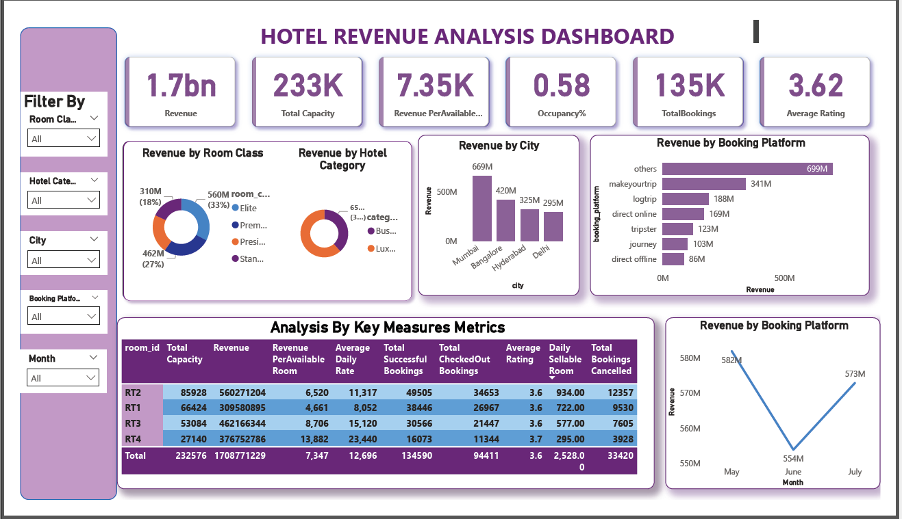
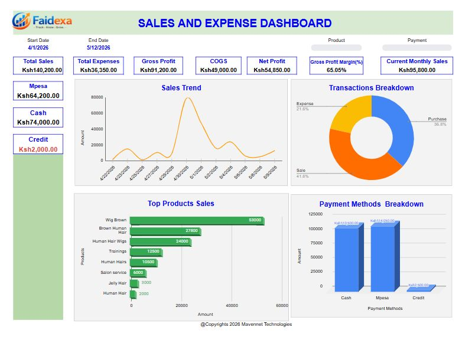
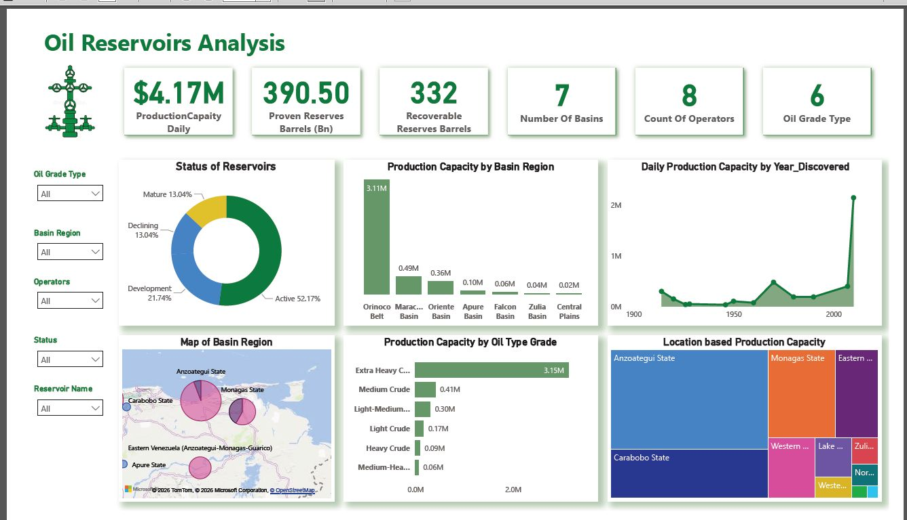
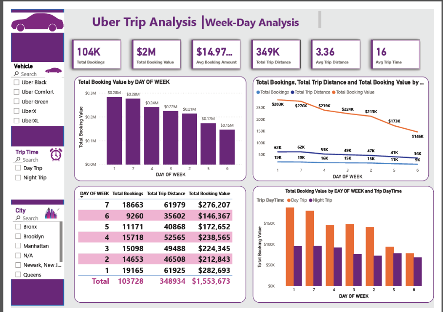
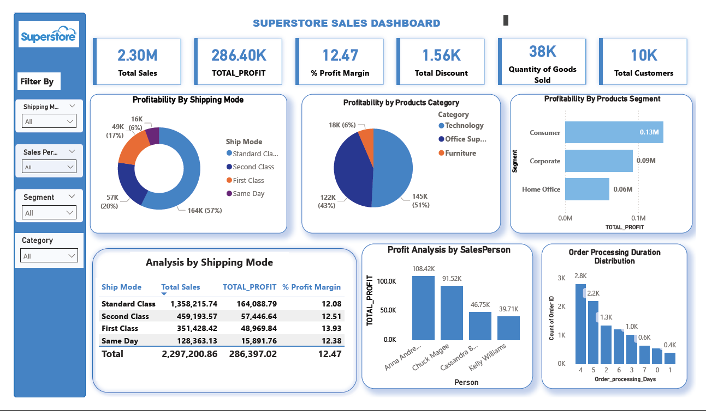
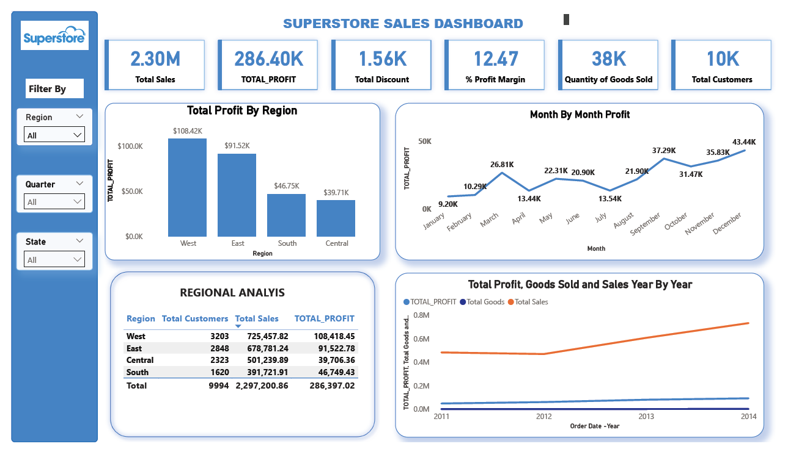
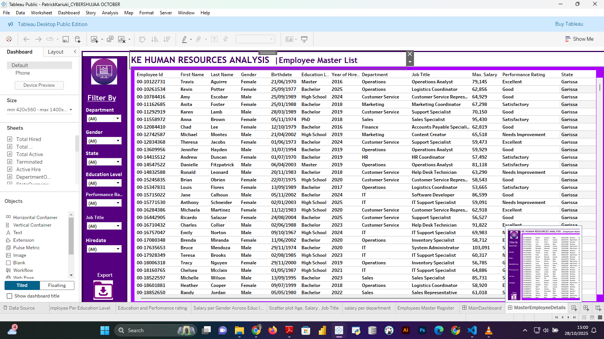
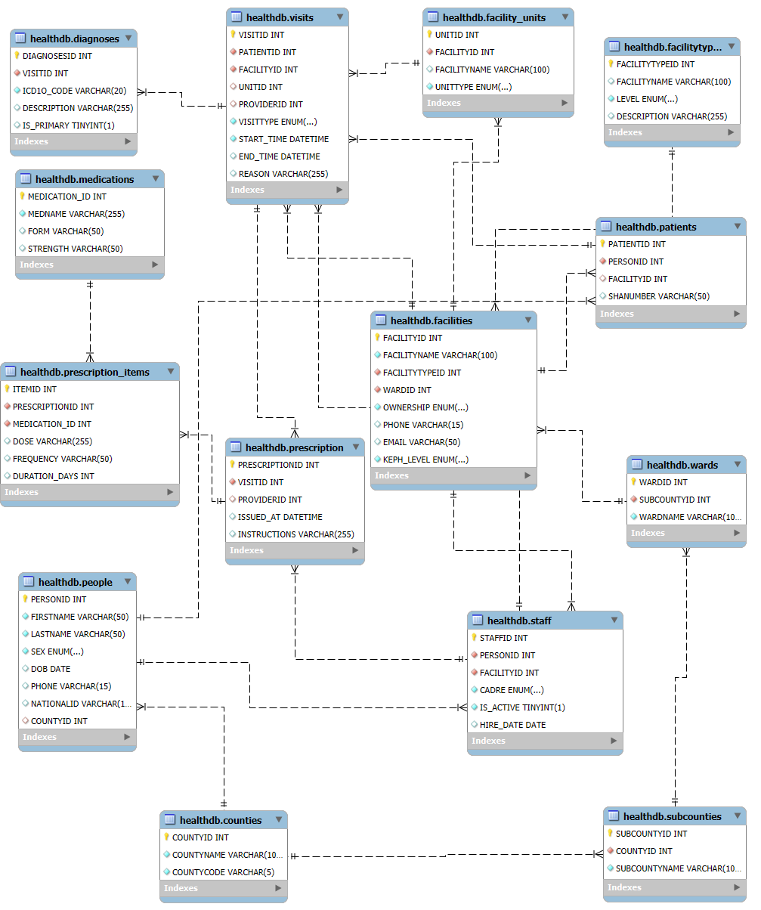

My Projects

Hotel Revenue & Bookings Analysis Dashboard
Turning Raw Data into Business Intelligence with Power BI.
This project demonstrates how effective data modeling and visualization in Power BI
empower smarter decisions in the hospitality industry.
Project Overview
- Integrates and analyzes hotel booking data to uncover trends in revenue performance, occupancy, and customer behavior.
- Provides a 360° operational and financial view for decision-makers.
Data Modelling Approach
- Used a Star Schema Model with fact and dimension tables.
- Key DAX metrics: RevPAR, Occupancy Rate, ADR, Cancellation %.
- Optimized relationships for interactive, dynamic insights.
Key Findings
- Total Revenue: $1.7B
- Occupancy Rate: 58%
- Top City: Mumbai
- Top Platform: MakeMyTrip
🚀 Business Impact
- Informed pricing and segment optimization.
- Improved customer retention and revenue strategy.

Sales & Expenses Dashboard
Real-time performance monitoring: The dashboard gives business owners a clear visual understanding of their operations through:
Key KPIs highlighted:
- Sales trends
- Product performance tracking
- Payment method analysis
- Profitability monitoring
- Expense tracking
Who are the beneficiaries of this

Venezuela Oil Reservoirs Bashboard
Energy Analytics in Action: Turning Oil Reservoir Data into Decisions
This dashboard delivers a consolidated, KPI-driven view of oil reservoir performance, designed to support strategic decision-making in today’s data-driven global economy.
Project Overview
- Integrates and analyzes hotel booking data to uncover trends in revenue performance, occupancy, and customer behavior.
- Provides a 360° operational and financial view for decision-makers.
Key KPIs highlighted:
- Daily Production Capacity: $4.17M
- Proven Reserves: 390.50 Bn barrel
- Basin Regions: 7
- Active Operators: 8
- Oil Grade Type: 6
Beyond the KPIs, the analysis integrate
- Reservoir lifecycle status (Active, Development, Declining, Mature)
- Production capacity by basin and oil grade.
- Discovery trends over time
- Location-based and spatial production insights
- This kind of end-to-end analytics is critical for energy companies, regulators, and policymakers seeking to optimize resource allocation, improve transparency, manage risk, and align energy strategy with economic and sustainability goals.

Uber Trip Analysis Dashboard
Overall Performance
- 104K total bookings generating $2M value.
- Average distance: 3.36 miles | Average trip time: 16 mins.
Trips by City
- Manhattan: 59.8K trips
- Brooklyn: 18.6K | Queens: 16.9K
🚘 Vehicle Usage
- UberX leads with 39K passengers.
- Others: Comfort, Black, XL (~17K each).
Payment Trends
- Uber Pay: 67% of transactions.
- Cash: 33% — still significant.


Superstore Sales Dashboard | Power BI Project
Proud to present my latest analytics project — a Superstore Sales Dashboard built in Power BI, showcasing insights on sales performance, profitability, shipping modes, and regional distribution.
Dashboard Highlights
- Total Sales: 2.3M
- Profit Margin: 12.47%
- Profitability by Shipping Mode and Region
- Order Processing Duration Distribution
- Customer and Segment Analysis
Learning & Skills Gained
- Deepened understanding of data modeling and DAX measures.
- Enhanced skills in interactive dashboard design and business storytelling.
- Transformed raw datasets into actionable business intelligence.
Acknowledgment
Grateful to Future Interns for providing a platform to apply and showcase these skills, and to Kaggle for the open-source Superstore dataset that made this analysis possible.
“Explore. Analyze. Visualize. — because every dataset holds a story worth uncovering.”
View Code on GitHub.png)

Human Resources Analysis Dashboard | Tableau Public
Developed an interactive Tableau dashboard for HR teams to visualize workforce data and make data-driven decisions aligned with Kenya’s HR context.
KPIs
- Total Hired: 8,950 | Active: 7,950 | Terminated: 1,000
- Gender: 54% Male | 46% Female
- Top Age Group: 25–35 years
Insights
- Gender balance shows equitable recruitment.
- Bachelor’s degree holders dominate productivity.
- Operations and Sales drive most salaries and headcount.

Kenya Health Management Database (healthDB)
A relational database system built in MySQL to manage health data across Kenya — including administrative units, healthcare facilities, staff, patients, visits, diagnoses, and prescriptions.
Overview
Reflects Kenya’s health hierarchy (Counties → Facilities). Designed for scalability, data integrity, and analytics support.
Key Features
- Administrative units: counties, subcounties, wards.
- Healthcare facilities and facility units.
- Staff and patient records.
- Visits, diagnoses, and prescriptions tracking.
Schema & Relationships
Includes primary/foreign keys for referential integrity. Each facility links to multiple staff, patients, and visits.
Installation
DROP DATABASE IF EXISTS healthDB;
CREATE DATABASE healthDB;
USE healthDB;
-- Execute provided CREATE TABLE statements
Sample Query
SELECT f.FACILITYNAME, c.COUNTYNAME
FROM facilities f
JOIN wards w ON f.WARDID = w.WARDID
JOIN subcounties s ON w.SUBCOUNTYID = s.SUBCOUNTYID
JOIN counties c ON s.COUNTYID = c.COUNTYID
WHERE c.COUNTYNAME = 'Nairobi';
Author: Patrick Kariuki
View Schema